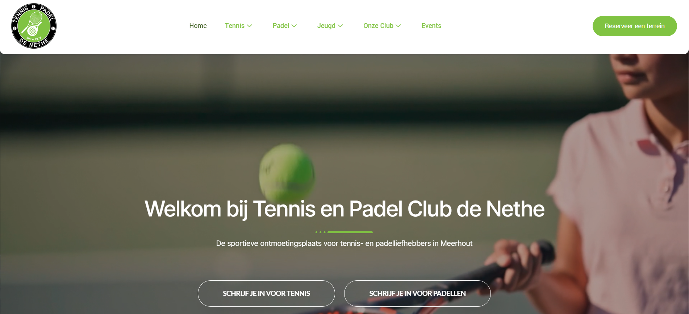
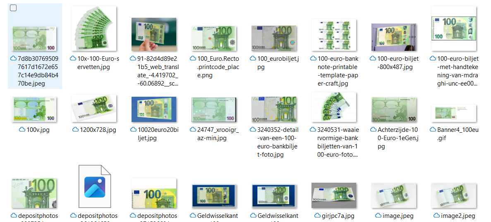
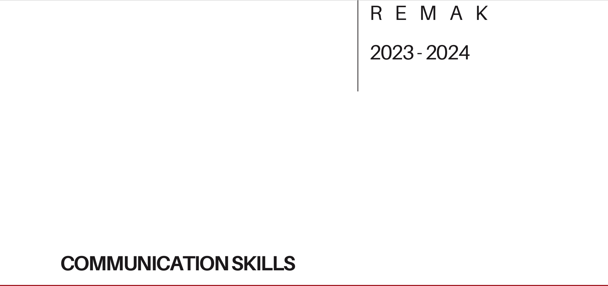

Creatieve denker met een passie voor technologie, logica en digitale oplossingen.
Welkom op mijn portfolio!
Hier geef ik een kijkje in mijn achtergrond, ervaring en wat mij drijft in de wereld van programmeren.
Ik ben Sergio Remak, een gedreven en creatieve student Programmeren aan Thomas More in Geel. Na verschillende ervaringen in de commerciële en logistieke sector heb ik ontdekt dat mijn echte interesse ligt in technologie en het bouwen van digitale oplossingen.
Door mijn eerdere werk bij onder andere Nike ELC, KFC Turnhout, Domino's, McDonald's en Center Parcs Mol heb ik veel geleerd over teamwork, verantwoordelijkheid en klantgericht werken. Daarnaast deed ik stages bij Contour De Twern en Repairable in Tilburg, waar ik mijn organisatorische en technische vaardigheden verder ontwikkelde.
Vandaag combineer ik die praktijkervaring met mijn groeiende kennis van C#, databases en andere programmeertechnieken. Ik haal veel voldoening uit het bedenken van logische oplossingen en het vertalen van ideeën naar functionele programma's.
In mijn vrije tijd ben ik graag actief bezig met voetbal en muziek maken — twee dingen die me energie geven en mijn creativiteit stimuleren.

Ik heb een webpagina gemaakt samen met twee andere studenten.
Project De Nethe
Ik heb met een medeleerling een model gemaakt dat Euro biljetten inleest.
Code geld inlezen
Dit is een portfolio die ik gemaakt heb voor soft skills.
Soft Skills Portfolio